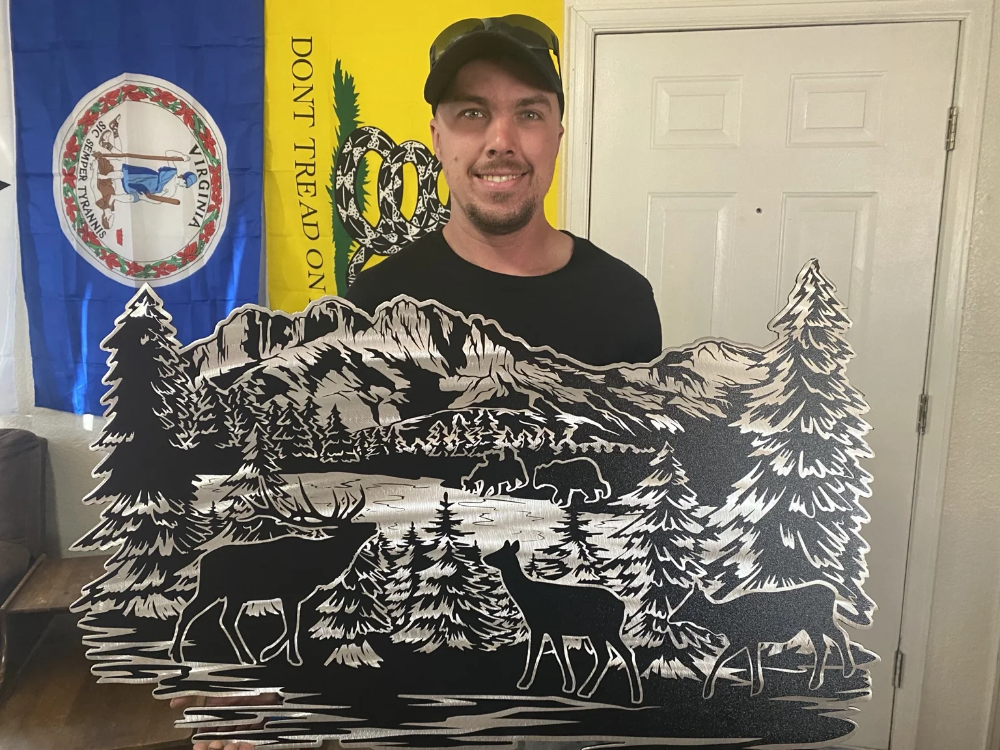
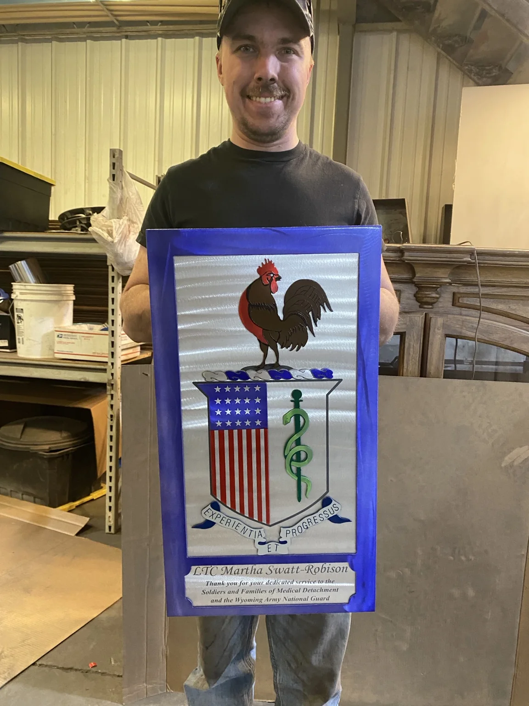
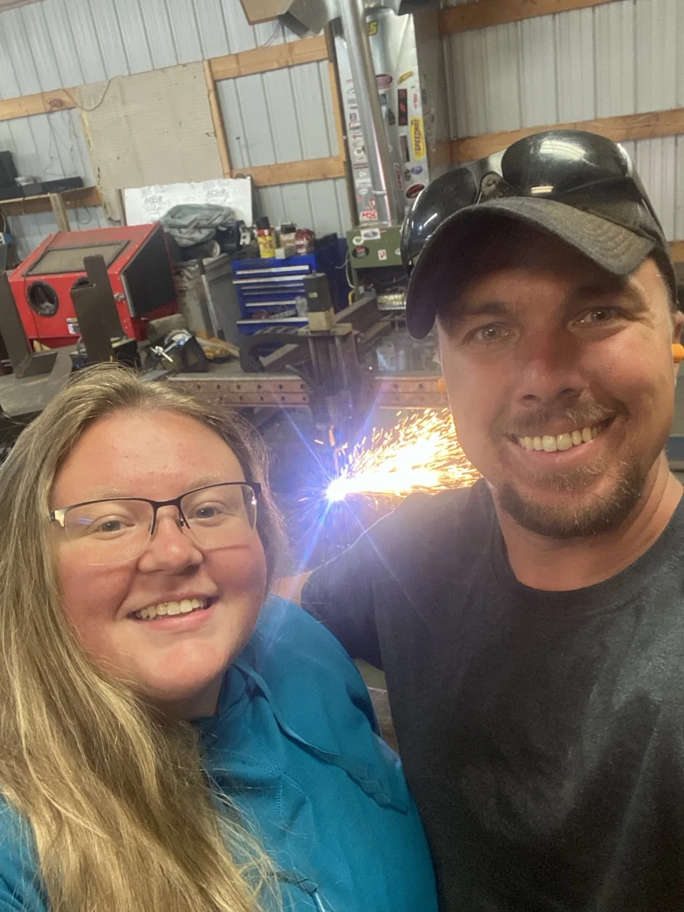
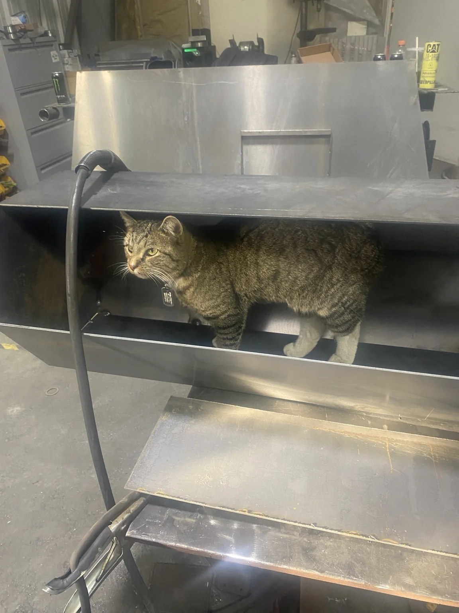

A small shop built around useful work
Stanrod Welding & Plasma is a hands-on Cheyenne shop. The business grew around custom fabrication, repairs, plasma cutting, metal art, and the kind of odd jobs that usually start with, “I’m not sure how to fix this, but…”
Help first. Fabricate second.
The real value is not just owning welders, a plasma table, or a pile of steel. It is being able to look at a problem, understand what the customer is trying to accomplish, and build a practical way forward.
That might mean helping a contractor close out a difficult item, giving a homeowner a custom piece that actually fits the space, or repairing equipment that cannot simply be replaced that afternoon.
The work can be serious without the company feeling stiff. This is still a real shop, run by real people, with sparks, dirty floors, weird projects, and the occasional shop cat inspection.

There is a person behind the work
A big part of the shop is seeing an idea move from a sketch or cut file into a finished piece somebody will actually use, install, display, or keep.

There is a family behind the shop too
Stanrod is not a faceless fabrication company. It is a small business with family involved, customers who come back, and a shop that has grown project by project over the years.

Some inspections are more demanding than others
Pistachio has been known to verify fit, clearance, and general cat-worthiness before a project leaves the shop.
